鵜原山のふもと、
水と、風と、人が集まる谷
ABOUT｜UNOHARA TAPROOM（仮）
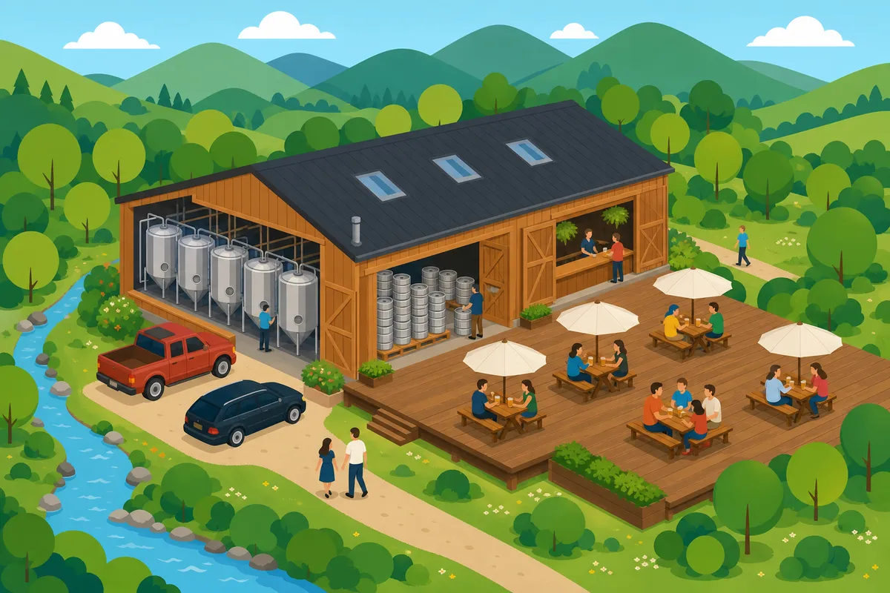
2027年に開く予定の新しいタップルームです。小杉川の清流と緑にかこまれた谷で、クラフトビールと地元の食材でつくる料理、それに小さなイベントを楽しめる場所にします。
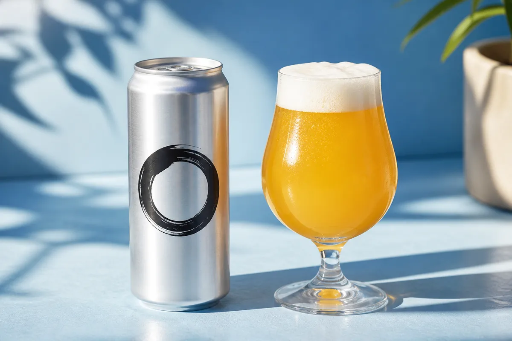
UNOHARAらしいやり方で、
ビールをつくってみたいと思った。
UNOHARA BREWINGウノハラブルーイング
SCROLL DOWN
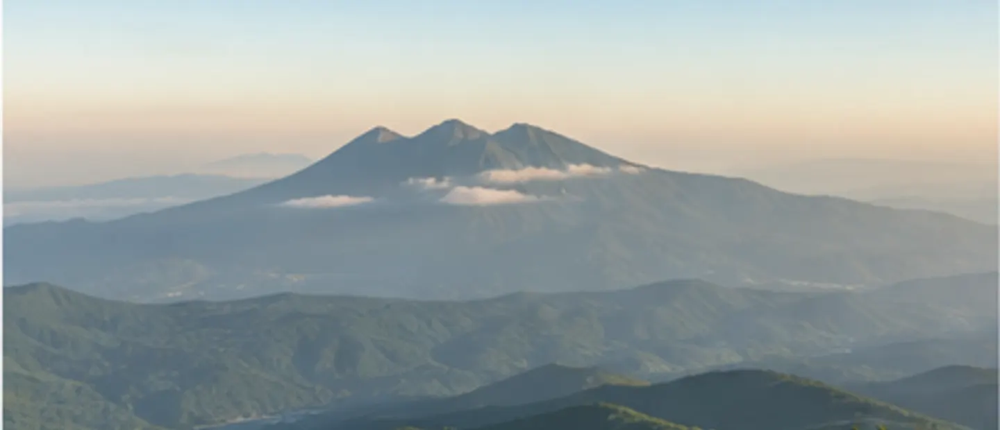
水と、時間と。
急がずに、ゆっくり仕込む
ウノハラのクラフトビール。
UNOHARA BREWING
川の水で仕込んだ
濁りのある一本
. . . .
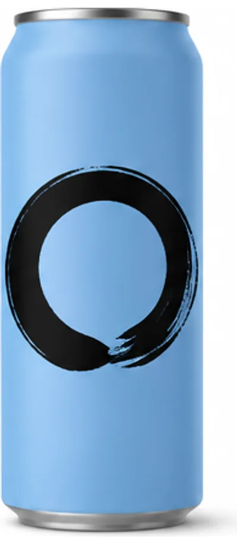
香り苦味・ボディ
マンゴーと洋梨のような香り。苦味は控えめで、飲んだあとに甘い余韻が少し残ります。冷やしすぎない方がおいしい。
¥ 6,480（6本）〜
山椒を少しだけ
効かせた夏の一本
. . . .
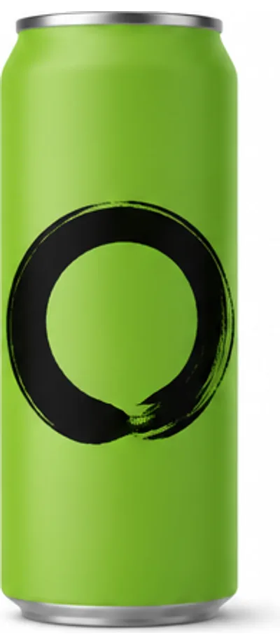
香り苦味・ボディ
ぴりっとした後味。炭酸が強めで、揚げものと合わせると軽く流してくれます。夏のあいだだけつくります。
¥ 6,980（6本）〜
いちばん最初に
つくったビール
. . . .
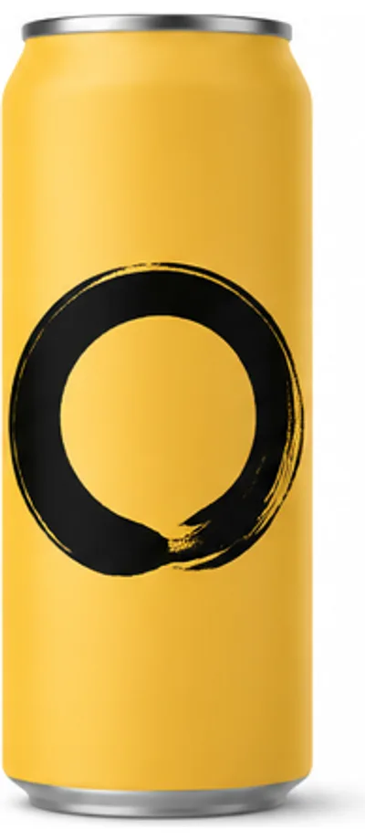
香り苦味・ボディ
麦の甘さと苦味がまん中で釣り合っています。迷ったらこれ、と言えるように10年かけて調整してきた一本です。
¥ 6,280（6本）〜
桃の香りだけを
残したかった
. . . .
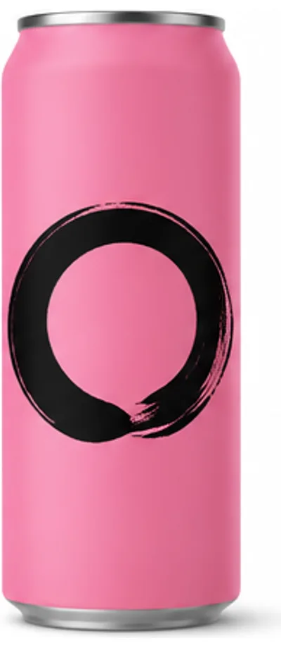
香り苦味・ボディ
桃の果汁は使わず、ホップの組み合わせだけで香りを出しています。苦味はほぼありません。よく冷やしてどうぞ。
¥ 7,140（6本）〜
BEER & GOODS
ウノハラ醸造がこれまでにつくったビールをすべてご覧いただけます。ご自宅で楽しめるグラスも一緒に。
ABOUT｜UNOHARA TAPROOM（仮）

2027年に開く予定の新しいタップルームです。小杉川の清流と緑にかこまれた谷で、クラフトビールと地元の食材でつくる料理、それに小さなイベントを楽しめる場所にします。
ABOUT｜醸造家
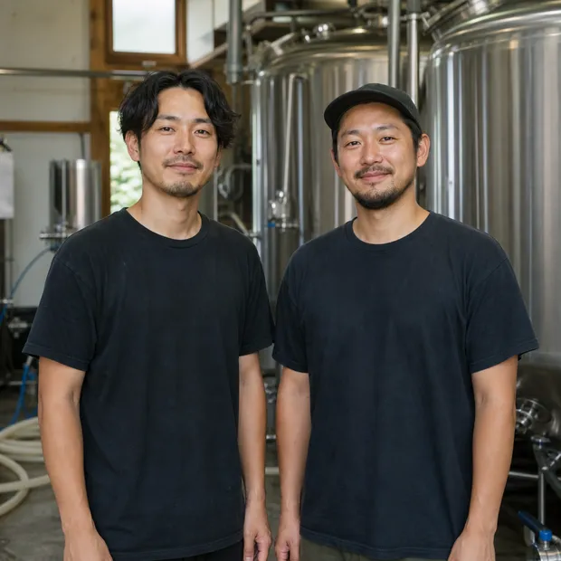
醸造を担うのは、鵜原 湊と鵜原 岳の兄弟。性格はまったく違いますが、味の話になると不思議と結論が同じになります。
毎日、坂をひとつ越えていく。
さあ、あとひと踏ん張りするか。
そう思えるのは、
その先に一杯が待っているから。
僕は、その一杯をもっと特別にしたい。
香りが気持ちをほどき、
口に含めば、肩の力がすっと抜ける。
今日という一日がねぎらわれるような。
また明日も頑張ろうと思えるような。
それぞれの「いま」に乾杯を。
お知らせ
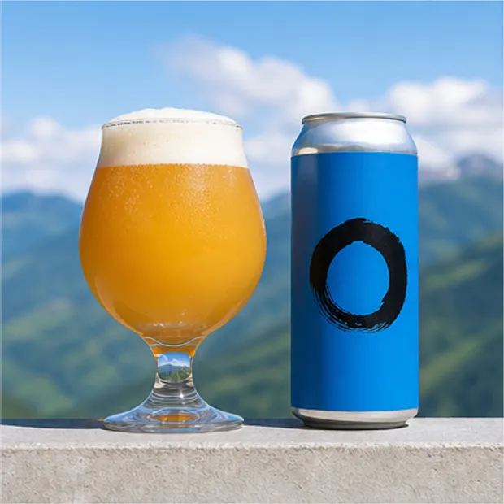
マンゴーと洋梨の香りを立たせたくて、ホップを3回に分けて入れています。やわらかく、ジューシーに香る一本になりました。
お知らせ
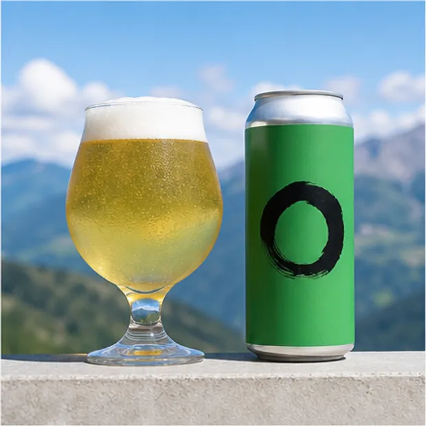
地元で採れた山椒をほんの少し。香りが立ちすぎないよう、仕込みの最後に短い時間だけ漬けています。
お知らせ
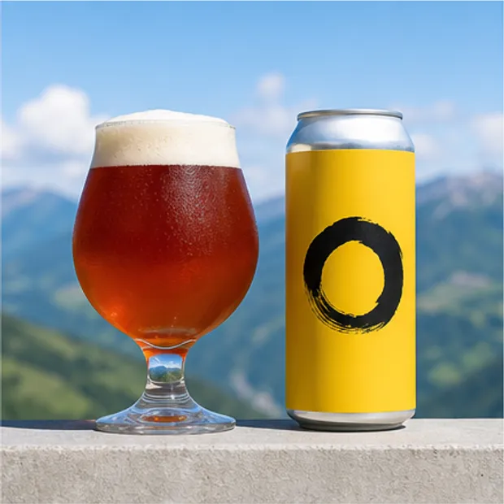
麦の甘さと苦味の釣り合いを、毎年少しずつ直してきました。今年のロットがいちばんまん中に来たと思っています。
お知らせ
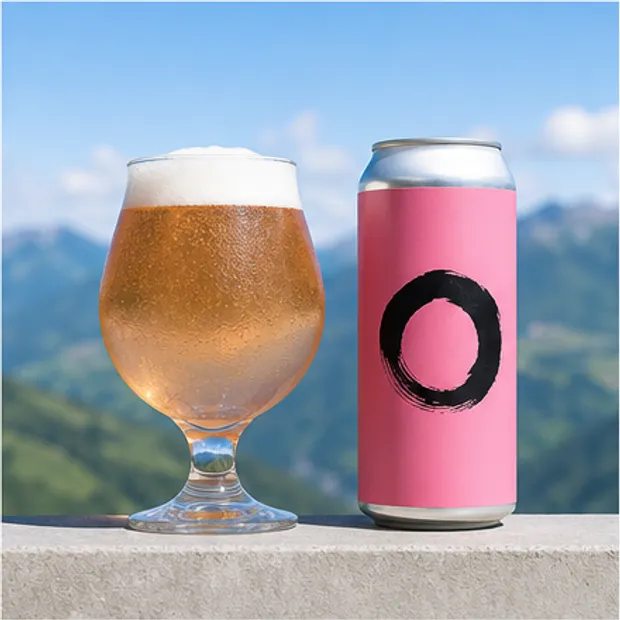
果汁を足すと甘さが勝ってしまうので、ホップの組み合わせだけで桃の香りを出しました。苦味はほぼありません。
ていねいにつくろう。
こわがらずにつくろう。
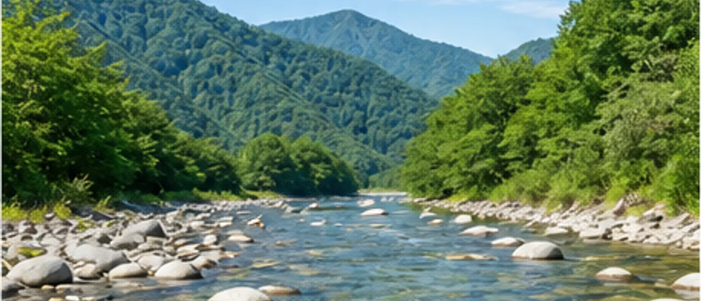